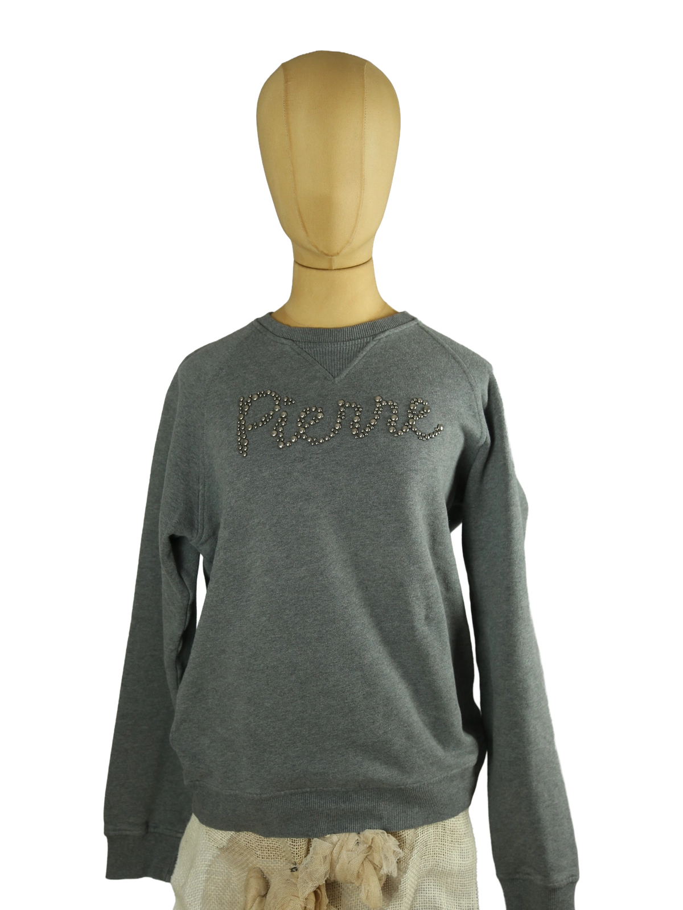

1 / 10Aus dem kuratierten Archiv von Disorder119. Dieses Pierre Balmain Sweatshirt präsentiert sich in einem zurückhaltenden Grauton mit klassischem Rundhalsausschnitt und Raglanärmeln. Die klare, sportlich-elegante Silhouette wird durch das dezent applizierte „Pierre“-Schriftzug-Design auf der Front ergänzt, ausgeführt mit metallischen Nieten, die dem ansonsten reduzierten Stück eine subtile visuelle Spannung verleihen. Das Material wirkt weich und kompakt, innen leicht angeraut, wodurch das Sweatshirt sowohl strukturiert als auch angenehm tragbar ist. Ein zeitloses Design, das sich mühelos in verschiedene Looks integrieren lässt und die traditionelle Handschrift des Hauses Balmain transportiert. Details: Marke: Pierre Balmain Farbe: Grau Größe: 48 Passform: Regulär Verschluss: Kein Verschluss Material: Baumwollmischgewebe Herstellungsland: Nicht angegeben Fotografie & Passform: Das Kleidungsstück wurde auf unserer Standard-Schneiderpuppe fotografiert, die wir zur konsistenten Darstellung aller Kleidungsstücke verwenden. Maße der Schneiderpuppe: Brustumfang 89 cm Taillenumfang 66 cm Hüftumfang 89 cm Schulterbreite 38 cm Diese Maße dienen ausschließlich der visuellen Einordnung und werden nicht als Artikelmaße bezeichnet. Zustand: Gebraucht. Insgesamt guter, gepflegter Zustand mit leichten, altersbedingten Gebrauchsspuren. Rechtliche Hinweise: Verkauf als gebrauchtes Kleidungsstück. Die Beschreibung erfolgt nach bestem Wissen und Gewissen. Farbnuancen und Oberflächenwirkungen können aufgrund von Lichtverhältnissen bei der Fotografie sowie unterschiedlicher Bildschirmdarstellungen leicht vom Original abweichen. Disorder119 steht für sorgfältig kuratierte Designerstücke mit Fokus auf Authentizität, Qualität und zeitlose Relevanz.
Disorder119 · Kuratiertes Archiv für Designer-, Vintage- und Contemporary-Mode. Jedes Stück wird einzeln ausgewählt, fotografiert und beschrieben.